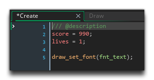
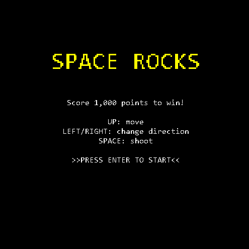

Most of the text we've just added can't be seen, as we haven't actually coded anything into change between the different rooms. We'll do that now, starting with detecting the press of the  key to start/restart the game, depending on the room the player is in.
key to start/restart the game, depending on the room the player is in.
In the object "obj_game", add a Step Event. This event will check for the  keypress and then run a switch on the room variable to see what action should be taken using the following code:
keypress and then run a switch on the room variable to see what action should be taken using the following code:
if (keyboard_check_pressed(vk_enter))
{
switch(room)
{
case rm_start:
room_goto(rm_game);
break;
case rm_win:
case rm_gameover:
game_restart();
break;
}
}
Here we use two new functions which are pretty self-explanatory: room_goto() which will end the current room and then go to the room given as its argument, and then game_restart(), which takes no arguments and will simply restart the game again, as if the player was running it for the first time. Note how we have the two room cases together there for the win and gameover states. As was mentioned previously, omitting a break means that the case detected will run, and then subsequent cases will run too until the end of the switch or a break is met. Here we use this behavior to our advantage to detect two values and run a single code block.
We want to add in some more code now to detect the "win" and "lose" conditions, which in the case of our game is going to be 1000 points for the score to win, or 0 lives to lose. So, we'll want to first check that the current room is the game room (we don't want to perform these checks in any other room), and then we want to check the lives and score variables, like this:
if room == rm_game
{
if score >= 1000
{
room_goto(rm_win);
}
if lives <= 0
{
room_goto(rm_gameover);
}
}
We can quickly test this by opening up the Create Event of the "obj_game" and editing the score and lives to be 990 and 1 respectively:

And now if we test the game we will get the "Win" and "Game Over" screens depending on whether we shoot an asteroid or crash into it:

Click the "Next" button to continue on to the last chapter, where we'll add some polish to the overall gameplay...